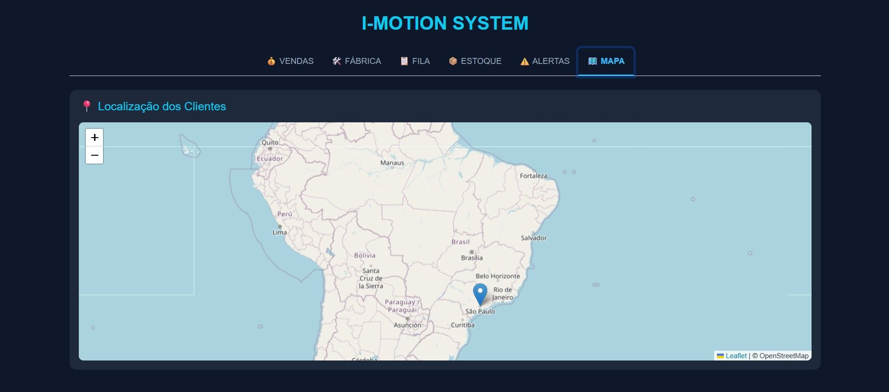
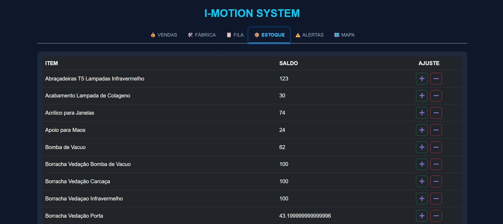
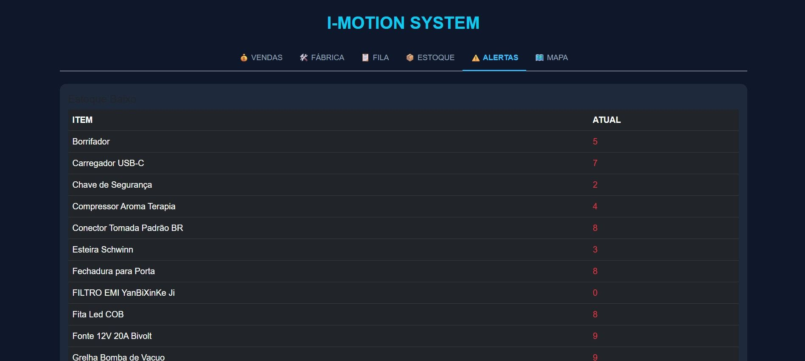
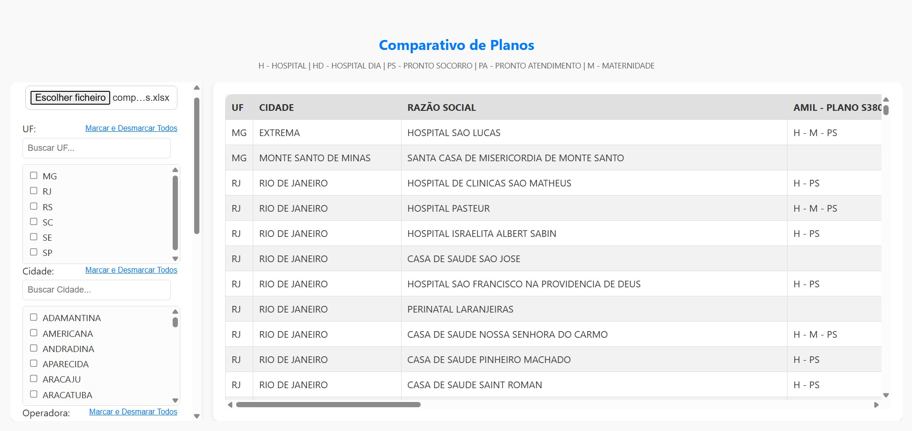
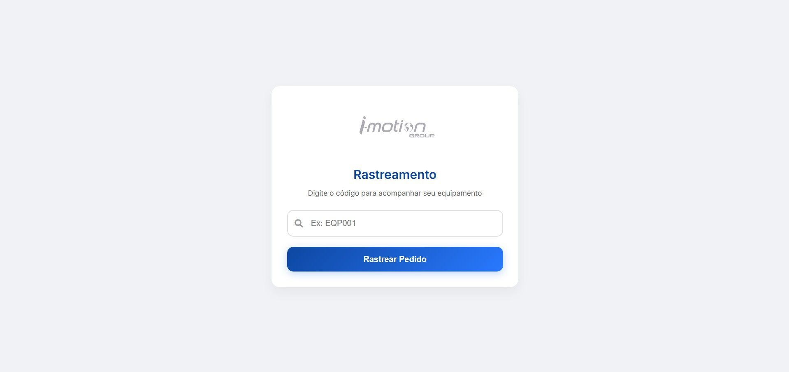
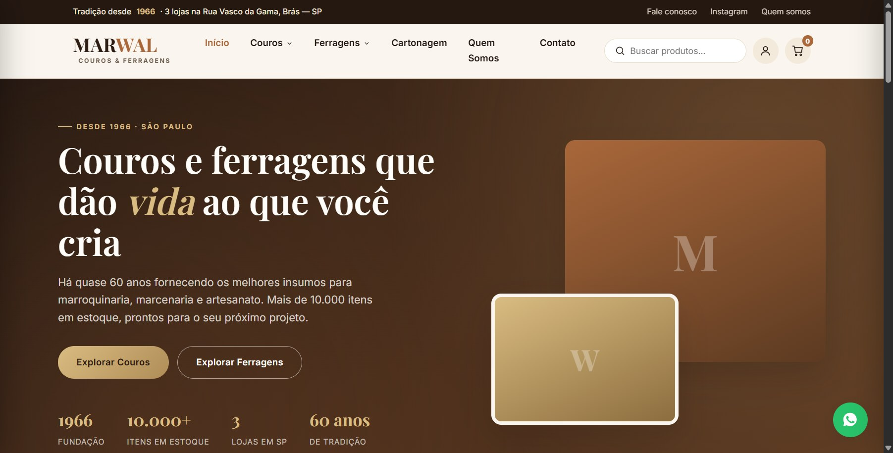
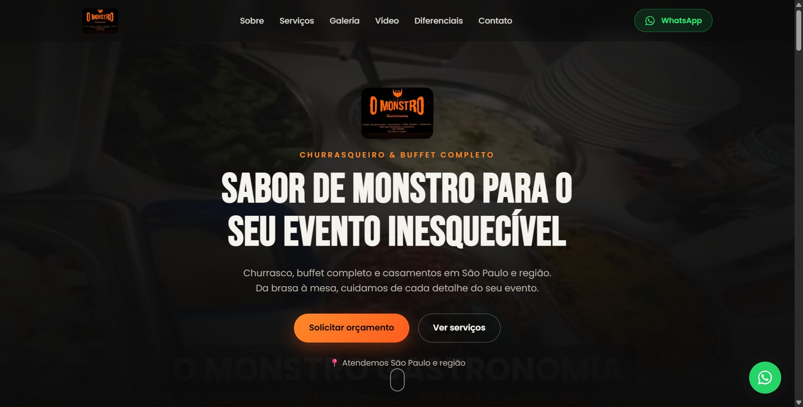
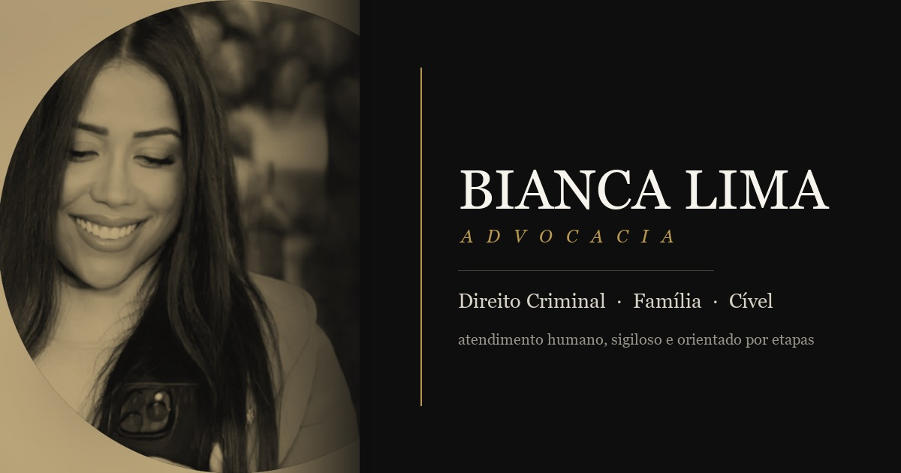
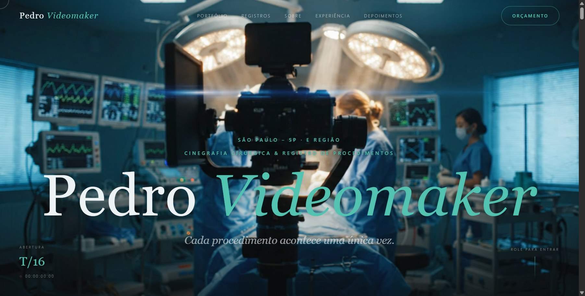

Automações e plataformas de IA sob medida, do diagnóstico ao resultado mensurável.
Fluxos manuais viram operações digitais inteligentes.
Atendimento 24h no WhatsApp. Agendamento, dúvidas e orçamento sem espera.
Chega de copiar e colar. WhatsApp conectado a planilhas e sistemas, sem erro humano.
Rastreamento e dashboards interativos. Sua operação inteira em uma tela.
Automações rodando em processos críticos, multiplicando a capacidade de empresas reais.



O Desafio: Ativos descentralizados e frota sem monitoramento em tempo real.
A Solução: Mapa de calor de clientes, inventário com alertas automáticos e painel de auditoria de estoque em um só lugar.

O Desafio: Cruzamento manual de tabelas de operadoras, planos e faturamento.
A Solução: Automação via Excel/Python com comparativo instantâneo de planos, reduzindo erros e acelerando decisões financeiras.

O Desafio: Suporte sobrecarregado com chamados sobre status de equipamentos.
A Solução: Portal onde o cliente digita o código e vê o status em tempo real, sem contato humano.

O Desafio: Distribuidora tradicional (desde 1966) sem presença digital à altura das 3 lojas e 10 mil itens em estoque.
A Solução: Site institucional com catálogo por categoria (couros, ferragens, cartonagem) e canal direto de contato via WhatsApp.

O Desafio: Orçamentos de churrasco e buffet para eventos dependiam só do boca a boca e do Instagram.
A Solução: Landing page focada em conversão, com galeria de eventos e orçamento a um clique de distância no WhatsApp.

O Desafio: Escritório sem presença digital para captar e organizar novos casos por área de atuação.
A Solução: Site institucional com diagnóstico guiado por área jurídica, captação de leads qualificados e painel interno de acompanhamento.

O Desafio: Validar como um portfólio de nicho (cinegrafia cirúrgica) poderia se posicionar com identidade visual forte.
A Solução: Protótipo de site autoral com narrativa editorial — projeto conceito, ainda em fase de validação com material real do cliente.
Um processo ágil para mapear, construir e validar, sem travar sua operação.
Atacamos primeiro o gargalo com impacto financeiro mais claro e imediato.
Volume, economia e resultado de cada automação, acompanhados em tempo real.
A infraestrutura cresce na mesma proporção do seu lucro.
Automação e tecnologia, lado a lado, para entregar resultado real desde o primeiro ciclo.
Fundador & Diretor de Operações
Especialista em automação de processos e integração de sistemas, com foco em eficiência operacional.
Co-fundador & Líder Técnico
Responsável pela arquitetura e engenharia por trás de cada automação, transformando visão de produto em sistemas robustos e escaláveis.
Co-fundador & Suporte Técnico
Responsável pelo suporte técnico e pela escalabilidade dos produtos, garantindo estabilidade e continuidade em cada automação em produção.
Tire suas dúvidas antes de mapearmos sua operação.
Uma reunião estratégica para mapear seu fluxo atual. Se a automação não trouxer retorno claro e imediato, não avançamos com o projeto.
Na maioria das vezes, não. Conectamos via API com seu ERP, planilhas e WhatsApp atuais, sem trauma operacional para a equipe.
A fase final inclui treinamento completo do time e suporte técnico contínuo, garantindo estabilidade e previsibilidade.
Preencha os dados abaixo ou faça o diagnóstico guiado em 4 passos.